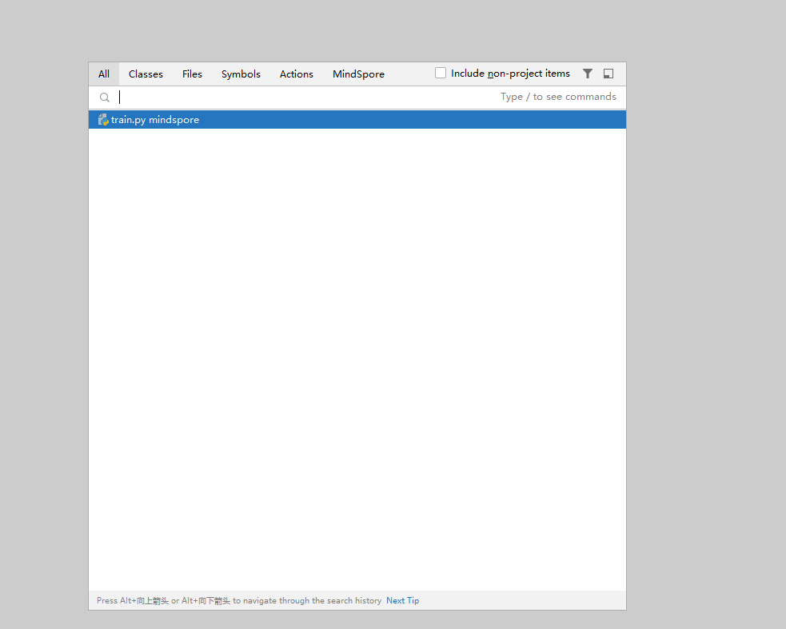
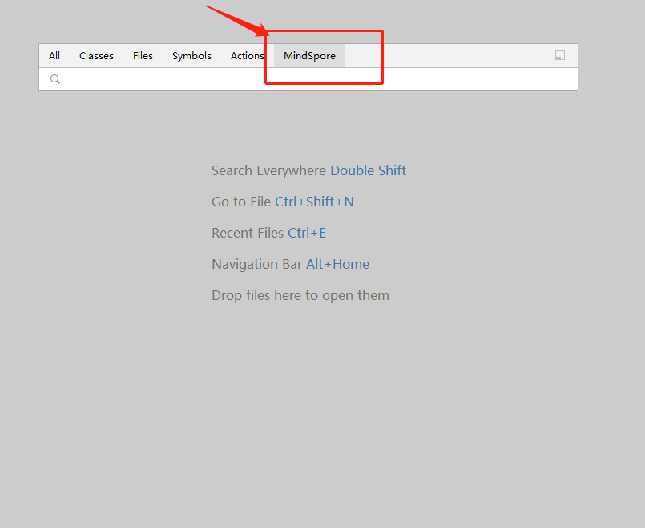
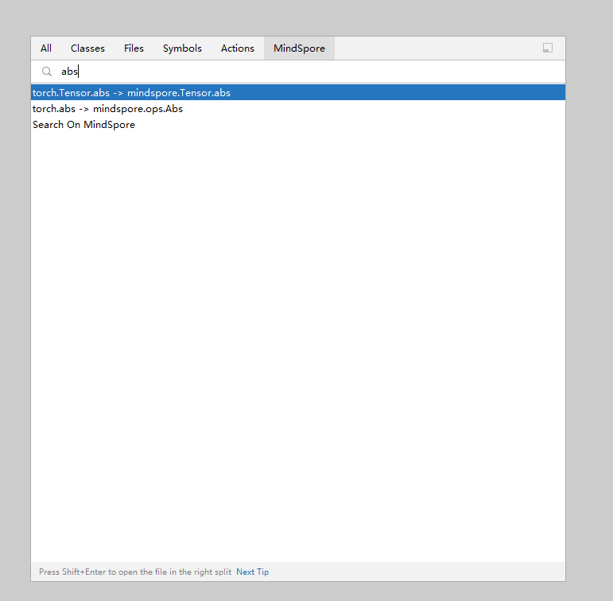

API Search¶

Functions¶
You can quickly search for MindSpore APIs and view API details in the sidebar.
If you use other machine learning frameworks, you can search for APIs of other mainstream frameworks to match MindSpore APIs.
Procedure¶
Press Shift twice. The global search page is displayed.

Click MindSpore.

Search for a PyTorch or TensorFlow API to obtain the mapping between the PyTorch or TensorFlow API and the MindSpore API.


Click an item in the list to view its official document in the sidebar.